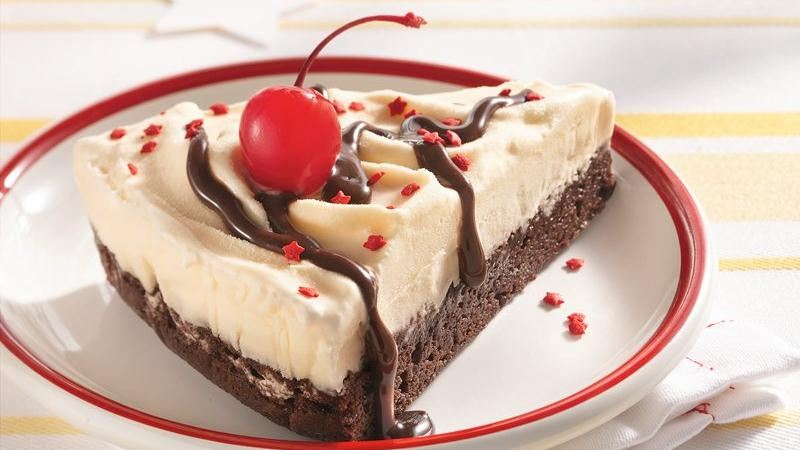

<!--
 Name:Neville Zou
 Student Id:
-->
<div class="pages">
<div data-page="projects" class="page no-toolbar no-navbar">
   <div class="page-content">
   <!--top header-->
      <div class="navbarpages">
         <div class="nav_left_logo"><a href="index.html"></a></div>
         <div class="nav_right_button">
		  <!--A link to Open Main Nav-->
            <a href="menu.html"></a>
		<!--A link to go back to Previous Page-->
            <a href="food-menu.html"></a>
         </div>
      </div>
	 <!--top header-->
      <div id="pages_maincontent">
         <!-- the header information of the page -->
         <h2 class="page_title">Our Recepie</h2><!-- heading tag-->
         <div class="post_single">
		 <!--Recipe Image And title-->
            <div class="featured_image">
               <!-- image tag for diplay image in browser-->
               <div class="post_title_single">
                  <h2>Brownie Ice Cream Cake</h2>
               </div>
               
            </div>
		<!--Recipe Image And title-->
		 <!--Recipe Detail-->
            <div class="page_content">
               <div class="entry">
                  <p><!-- starts new paregraph-->
                     Make a delicious fudgy and frosty ice cream cake. It's easy to make and a fraction of the cost of frozen desserts you buy in stores.
                  </p>
                  <ul class="simple_list"><!-- unorder list-->
                     <li> Heat oven to 350°F. Line 2 (9-inch) round cake pans with foil; grease bottoms only with shortening or cooking spray.</li><!-- list Element-->
                     <li>Make brownie batter directed on box. Divide batter evenly between pans. Bake 19 to 22 minutes or until toothpick inserted 2 inches from side of pan comes out almost clean. Cool completely in pans, about 1 hour. Do not remove from pans.</li>
                     <li>Spread slightly softened ice cream evenly on brownies in pans. Freeze at least 2 hours or until ice cream is firm.</li>
                     <li>Remove desserts from pans; remove foil. Place on serving plates. Cut each dessert into 8 wedges. Drizzle each wedge with hot fudge topping. Decorate with candy sprinkles and cherries. Store covered in freezer.</li>
                  </ul>
               </div>
            </div>
			 <!--Recipe Detail-->
         </div>
      </div>
   </div>
</div>